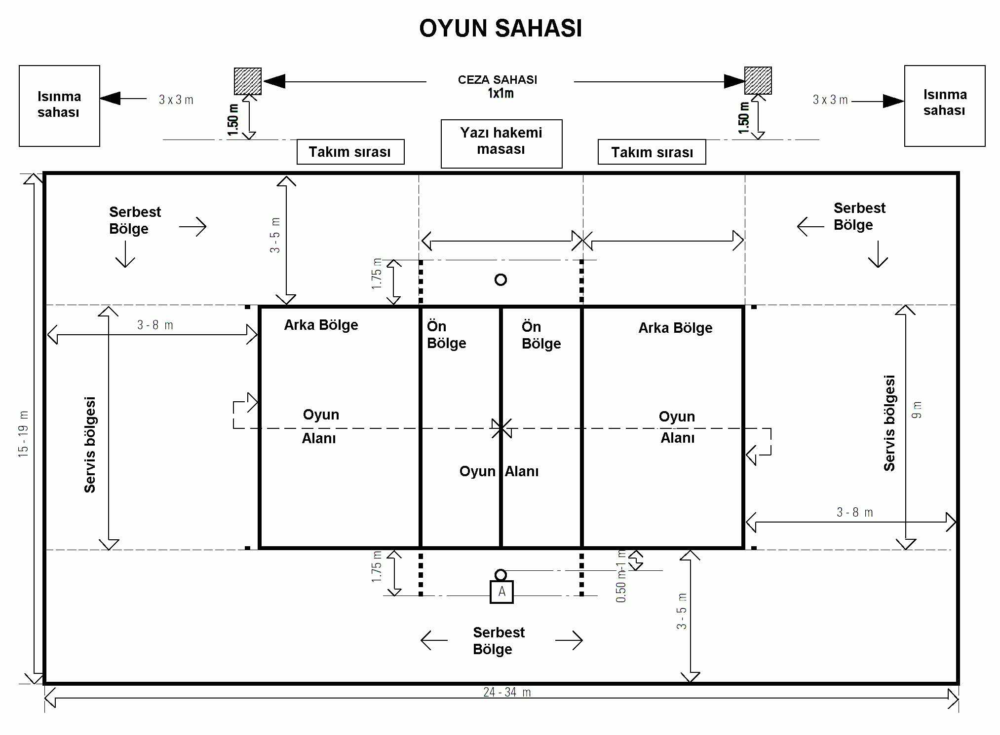

Voleybol Nedir
Voleybol, file ile ikiye bölünmüş bir oyun alanı üzerinde altı kişilik iki takım ile oynanan, voleybol topuna eller ve kollarla vurarak file üzerinden karşı tarafın oyun alanına gönderme ve yere değmesini sağlama esasına dayalı bir takım sporudur.
Voleybol nerde oynanır? Amacı?
Oyun, tam orta çizgisi üzerinden bir file ile ayrılmış olan bir sahada oynanır. Oyun esnasında her takımın oyuncuları sahanın kendine ait olan yarısında bulunur ve asla rakip alana geçmezler.Oyunun amacı, voleybol topunu en fazla üç pas yaparak rakip takımın sahasına göndererek yere çarpmasını sağlamak ve rakip takımın aynı amaca ulaşmasını önlemektir.
Voleybol Sahası ve Filesi
Voleybol sahası, dikdörtgen şeklindedir ve standart ölçüleri şu şekildedir:
- Saha Ölçüleri:Voleybol sahası, 18x9 m2 ölçülerinde bir dikdörtgendir ve her yönde en az 3 m genişliğinde olan bir serbest bölge ile çevrilmiştir. Oyun sahasının üzerinde bulunan serbest oyun boşluğu, her türlü engelden arındırılmış olmalıdır. Serbest oyun boşluğu, oyun sahası yüzeyinden ölçüldüğünde en az 7 m yüksekliğinde olmalıdır. Sahayı çevreleyen çizgiler 5 cm kalınlığındadır. Sahanın yüzeyi düz, yatay ve yeknesak olmalıdır. Oyuncular için sakatlanmaya yol açacak herhangi bir tehlike teşkil etmemelidir. Pürüzlü ve kaygan yüzeylerde oynanması yasaktır. FIVB Dünya ve Resmi Müsabakalarında sadece tahta veya sentetik bir yüzeyin kullanılmasına izin verilir. Bu yüzey daha önce FIVB tarafından onaylanmış olmalıdır. Kapalı salonlarda oyun alanının yüzeyi açık renkte olmalıdır. FIVB Dünya ve Resmi Müsabakalarında çizgiler için beyaz, oyun alanı ve serbest bölge için farklı renkler kullanılmalıdır. Açık hava sahalarında drenaj amacıyla her metre için 5mm'lik eğime müsaade edilir. Saha çizgilerinin sert bir maddeden oluşturulması yasaktır.
- File Yüksekliği:Erkekler için 2.43 metre, kadınlar için ise 2.24 metredir.
- Hücum Çizgisi:fileenin 3 metre uzağında bulunur ve arka hat oyuncularının smaç atma sınırını belirler.

Temel Voleybol Terimleri
- Servis: Oyunu başlatan vuruş türüdür. Servis, topu rakip sahaya gönderme amacıyla yapılır.
- Set:Bir voleybol maçında 25 sayıya ulaşan takıma verilen bölüm. Maçlar genellikle 3 ya da 5 set üzerinden oynanır.
- SmaçTopa zıplayarak yapılan sert vuruştur. Rakibin sayı almasını zorlaştıran etkili bir ataktır.
- Manşet:Gelen topu ellerin birleşimiyle karşılayarak oyunda tutma hareketidir.
- Blok: Rakibin yaptığı hücumları önlemek için file önünde yükselerek yapılan savunma hareketidir.
- Blok Out: Hücum esnasında bir oyuncuya blok yapıldığında, top blok yapan rakip takım oyuncusuna çarptıktan sonra dışarı çıkarsa bu durum blok out olarak adlandırılır.
- Plonjon: Voleybol oyuncularının kendi sahalarının uç bir noktasına gelen topu kurtarmak için öne doğru ve yere paralel şekilde yaptıkları atlayış plonjon olarak adlandırılır.
- Voleybol topu
- Voleybol filesi
- Hakem masa ve sandelyeleri
- Dizlikler ve kolluklar
Voleybol Ekipmanları Nelerdir?
Voleybolu en doğru ve etkili şekilde oynamak için ise gerekli ekipmanların tedarik edilmesi gerekir. İşte, voleybol zevkinizi zirveye çıkaracak profesyonel voleybol malzemeleri listesi…